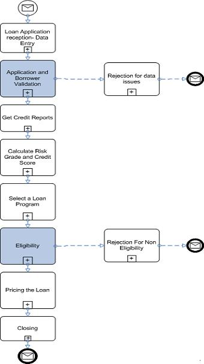

|
A Business Process is a collection of interrelated tasks, which solve a particular business problem or process a
business event: a claim is received and needs to be processed within 15 days.
A business process can be decomposed into several sub-processes, which have their own attributes, but also contribute
to achieving the goal of the super-process.
The following process map is done using BPMN 1.2 (2..0 soon) and illustrates a loan underwriting process. The
entry point is a mail with the loan application received, then the process follow a set of activities to decide if the
loan is eligible and what kind of loan product we can offer to the borrower and at what financial condition. This
process as described here is not taking into account the actors of the process. Swim lanes can be added to group
tasks per actors.

|